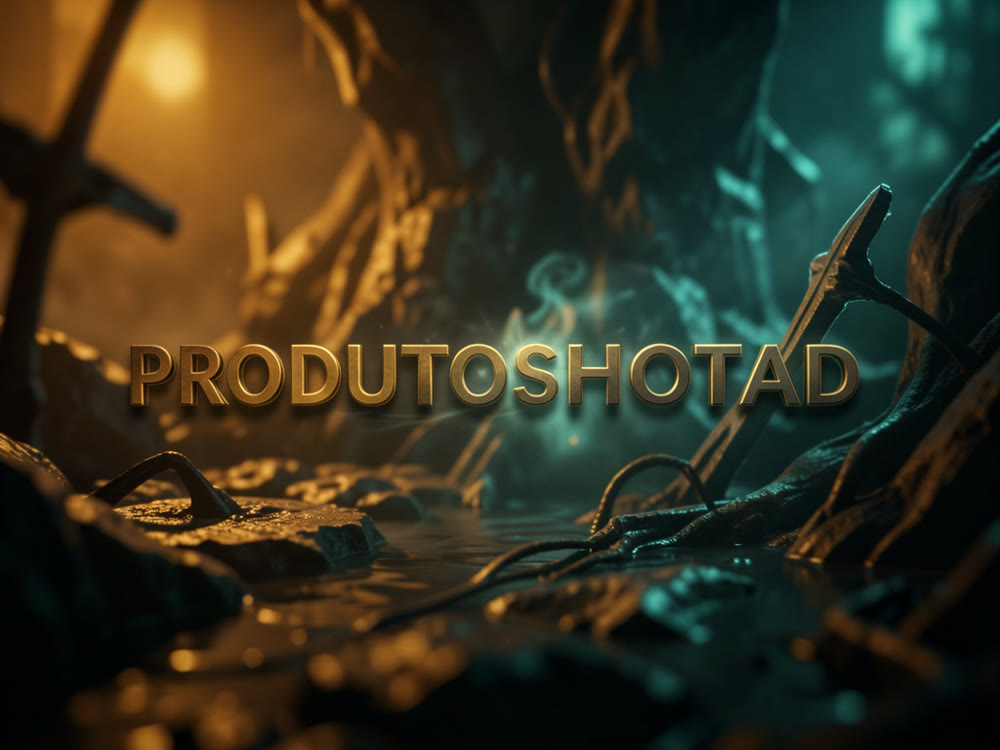
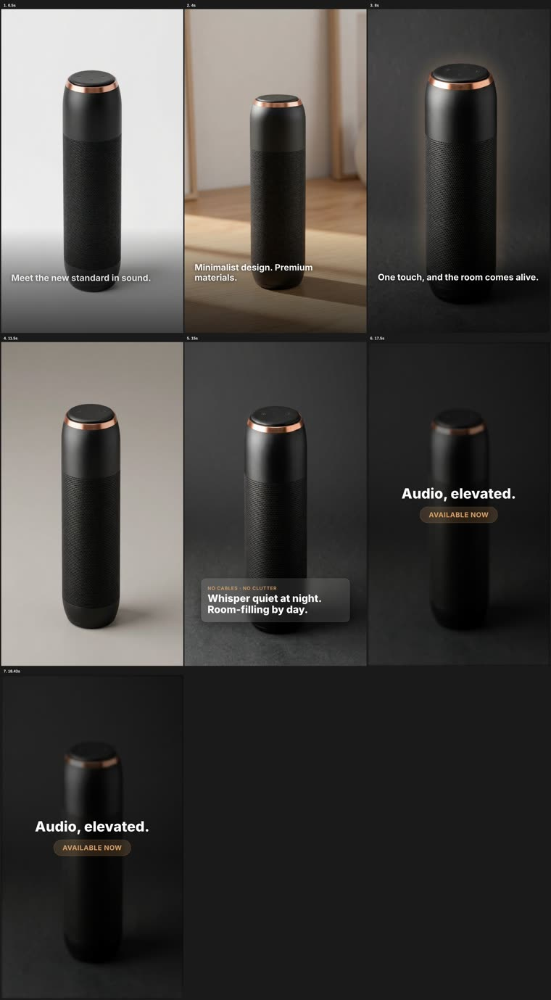
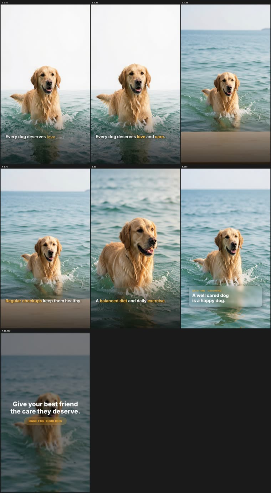

Pipeline de IA que transforma uma única foto de produto real em 5 imagens de anúncio e 5 vídeos curtos verticais (9:16, ~19-30s), com 3 workers diferentes conforme custo e ferramenta desejada.

Um agente Claude Code orquestra geração de imagem, animação de vídeo e voz — sem precisar de fotógrafo, editor de vídeo ou dublê de anúncio pago em cada teste.
Referência do produto (hero + close-up) travada e reanexada em toda geração — o produto não muda de forma/cor/proporção entre as 5 variações.
Agnes (US$0, só imagens), HyperFrames (vídeo animando as stills, sem IA de vídeo) ou o pipeline original completo (Fal.ai/Seedance + ElevenLabs).
Checkpoint humano antes de cada estágio avançar — gate que já pegou alucinações reais (embalagem fictícia, texto ilegível) durante o desenvolvimento.
Os 3 workers compartilham a mesma estrutura de entrega — 5 stills + 5 vídeos — e só divergem na ferramenta de geração.
Só imagens, API Agnes AI, US$0 de custo de geração. Sem vídeo.
Anima as stills já aprovadas com GSAP (Ken Burns, typewriter, glass card, flash-cut) — nenhum modelo de vídeo por IA envolvido.
Pipeline completo com Fal.ai/Seedance para image-to-video e ElevenLabs para voz — qualidade máxima, custo pago.
Depende de qual worker você vai rodar — nenhum dos três exige todos os itens abaixo ao mesmo tempo.
Chave da API Agnes AI (US$0).
# .env
AGNES_API_KEY=...CLI HyperFrames (via npx) + Kokoro TTS local, opcional.
# roda direto
npx hyperframes initChaves Fal.ai e ElevenLabs.
# .env
FAL_KEY=...
ELEVENLABS_API_KEY=...O caminho mais barato: gerar as 5 stills com Agnes, depois animá-las com HyperFrames — sem nenhuma chamada de vídeo por IA.
Uma foto real, fundo neutro, em products/.
cp minha-foto.png products/hero.png # referência travada
3 plain (uso direto) + 2 overlay (base para copy). Retry automático em 503, US$0.
python3 scripts/agnes_stills.py products/hero.png --desc "descrição em inglês" --ratio 9:16 # output/stills/*.png
Confira as 5 imagens contra a foto real antes de seguir — pega alucinação de embalagem/texto fictício antes de virar vídeo.
# abra e confira cada still em output/stills/ antes do próximo passo
TTS local, sem custo, reusa os pesos já baixados pelo HyperFrames.
python3 scripts/kokoro_tts.py "seu roteiro aqui" -o output/voz/ad.wav # .wav local
Anima as stills com Ken Burns, legenda com palavra-chave destacada, flash-cut entre cenas e CTA final — sem gerar nenhum pixel novo por IA de vídeo.
npx hyperframes init meu-anuncio -e blank --resolution portrait --non-interactive # scaffold # copie scripts/hyperframes-still-scene.template.html pro index.html e ajuste npm run check && npm run render # MP4 final em renders/
Contact sheets de dois anúncios de demonstração gerados de ponta a ponta pelo pipeline (produtos fictícios, usados só para validar a técnica).


Os 3 workers estão implementados e os workers 1+2 foram testados de ponta a ponta (incluindo bugs reais encontrados e corrigidos no processo).